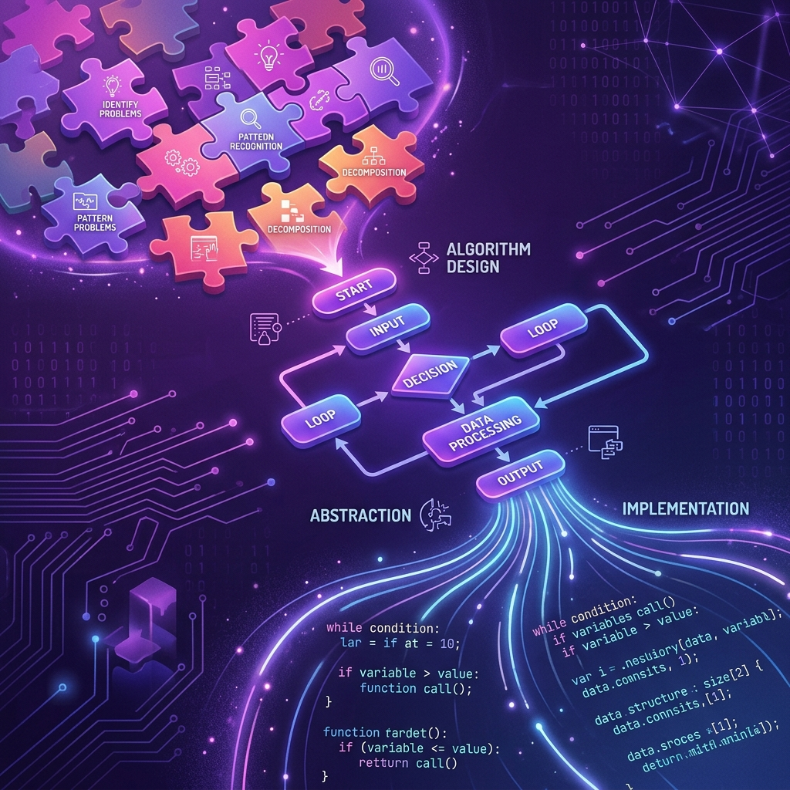
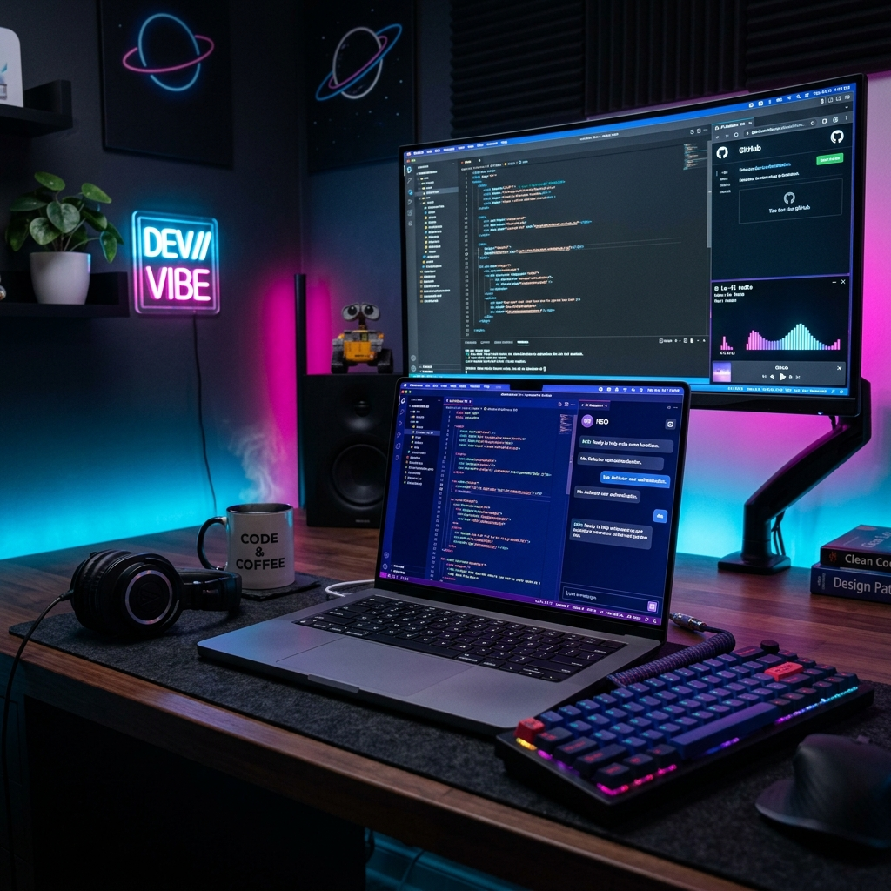

Kumpulan Tugas & Proyek Komputer
Halaman indek dokumentasi tugas pemrograman web, algoritma & logika komputer, perancangan antarmuka (UI/UX), serta basis data.
Artikel Pilihan Informatika
Artikel populer seputar tren Artificial Intelligence, Cyber Security, dan Computational Thinking.
Revolusi Kecerdasan Buatan: Bagaimana Machine Learning Mengubah Masa Depan
Mengulas perkembangan pesat AI dan algoritma Machine Learning yang kini mendasari inovasi modern mulai dari otomasi industri hingga analisis data cerdas.
Benteng Digital Era Siber: Tantangan dan Strategi Membangun Keamanan Informasi
Pentingnya pemahaman Cyber Security, enkripsi data, serta budaya kesadaran privasi digital di tengah meningkatnya ancaman kejahatan siber global.

Computational Thinking: Fondasi Logika Komputasional Memecahkan Masalah
Mengembangkan kemampuan berpikir komputasional melalui dekomposisi, pengenalan pola, abstraksi, dan perancangan algoritma yang efisien.

Vibe Coding: Era Baru Pemrograman Berbasis Intuisional dan AI
Menjelajahi fenomena vibe coding di mana developer fokus pada ide, alur sistem, dan kreativitas sementara sintaksis rutin diolah secara otomatis oleh AI.
Daftar Tugas & Proyek Informatika
Koleksi proyek praktikum pemrograman web, algoritma, dan desain interface.
Aplikasi Web Hitung Diskon Belanja
Membuat kalkulator diskon interaktif berbasis web menggunakan HTML, CSS Tailwind, dan JavaScript Vanilla dengan fitur validasi input.
Simulasi Algoritma Bubble Sort & Binary Search
Studi kasus implementasi algoritma pengurutan dan pencarian data dalam bahasa Python lengkap dengan diagram alur (flowchart).
Prototype Aplikasi Mobile Perpustakaan Sekolah
Rancangan visual wireframe dan prototipe interaktif aplikasi peminjaman buku digital dengan skema warna pastel.
Landing Page Portfolio Responsif
Desain antarmuka landing page responsif menggunakan CSS Grid & Flexbox yang optimal untuk tampilan HP dan Komputer.